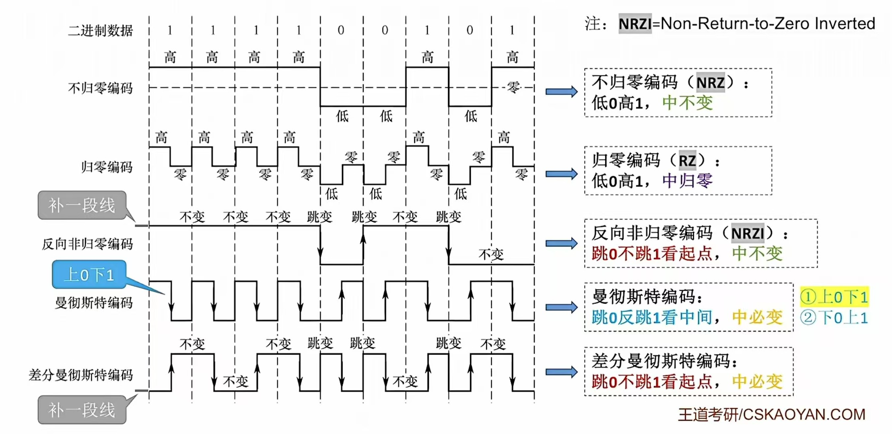
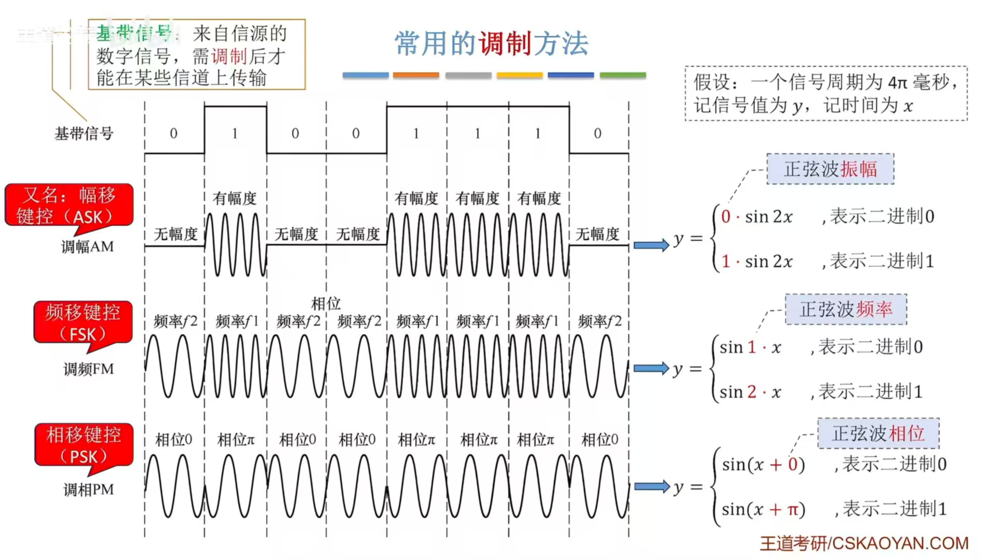

第2章 物理层
第二章 物理层¶
第一节 通信基础¶
一、基础概念¶
- 信源/新宿/信道：

- 信源：产生和发送数据的源头。
- 新宿：接收数据的终点
- 信号：信源发出的某种波形，可以是连续的或离散的。
- 模拟信号：模拟信号的波形是连续的，可以是连续的脉冲信号、连续的电压信号、连续的光信号等。
- 数字信号：数字信号的波形是离散的，可以是脉冲信号、二进制编码信号、调制信号等。
- 信道：信号传输的媒介，可以是导体、绝缘体、电介质、光介质等。
- 一条物理线路通常包含两条信道：发送信道、接收信道。
- 数据/信号/码元
- 数据：信息的载体，可以是数字信号、模拟信号、文字信号等。
- 信号：数据的电气/电磁表现，是数据在传输过程中的存在形式，可以是连续的或离散的。
- 模拟信号：模拟信号的波形是连续的，可以是连续的脉冲信号、连续的电压信号、连续的光信号等。
- 数字信号：数字信号的波形是离散的，可以是脉冲信号、二进制编码信号、调制信号等。
- 码元：一个固定时长的信号波形（数字脉冲）。
- 在这个时长内的信号称为k进制码元，而这个时长本身被称为码元宽度 。
- 当码元的离散状态有 \(M\)个时（\(M\)大于2），此时码元被称为 \(M\)进制码元 。
- 1个码元可以携带多个比特的信息量 。
- \(1码元=\log_2M bit\)。
- 速率/带宽/波特
- 速率：单位时间内传输的数据量。
- 码元传输速率：也称为波特率/调制速率，数字通信系统在单位时间内传输的码元数，单位是波特(Baud)。与进制无关
- 信息传输速率：也称为数据率/比特率，单位时间内传输的比特数，单位是比特/秒(bit/s)。
- 带宽：信道的最大数据传输能力，单位是赫兹(Hz)。
二、信道的极限容量¶
信道的极限容量主要由两个著名的定理来决定，具体取决于信道是否存在噪声： 1. 奈氏准则（奈奎斯特定理）—— 用于无噪声信道 奈氏准则指出了在理想低通（无噪声，带宽受限）条件下，为了避免码间串扰，信道传输速率的上限 。
-
极限码元传输速率：\(2W\)Baud，其中 \(W\)是信道带宽，单位是Hz 。
-
极限数据传输率（信道容量）公式：\(C=2W\log_{2}V\)(b/s)。
-
参数说明：\(W\)代表带宽（Hz），\(V\)代表几种码元或信号的级数（即码元的离散电平数目） 。
- 香农定理（Shannon公式）—— 用于有噪声信道 香农定理给出了在带宽受限且有噪声的信道中，为了不产生误差，信息的数据传输速率的上限值 。
- 信道的极限数据传输速率（信道容量）公式：\(C=W\log_{2}(1+S/N)\)(b/s) 或 \(C=B\times \log_{2}(1+\frac{S}{N})\)。
- 参数说明：
- \(W\)或 \(B\)代表信道带宽（Hz） 。
- \(S\)是信道所传信号的平均功率 。
- \(N\)是信道内的高斯噪声功率 。
- \(S/N\)代表信噪比 。
三、编码与调制¶
1. 数字数据编码为数字信号¶
这是将计算机内部的二进制数字数据转换为数字信号的过程。常见编码方式如下：

- 非归零编码（NRZ）：高电平代表1，低电平代表0 。
- 特点：编码容易实现，但没有检错功能，且无法判断一个码元的开始和结束，难以让收发双方保持同步 。
- 曼彻斯特编码（Manchester）：将一个码元分成两个相等的间隔，在每个码元的中间出现电平跳变 。前高后低表示1，前低后高表示0（或相反的规定），是以太网的默认编码方式。
- 特点：位中间的跳变既作时钟信号（可实现自同步），又作数据信号 。缺点是所占的频带宽度是原始基带宽度的两倍，数据传输速率只有调制速率的 \(1/2\)。
- 差分曼彻斯特编码：常用于局域网传输，规则为“同1异0” 。若码元为1，则前半个码元的电平与上一个码元的后半段电平相同；若为0，则相反 。
- 特点：每个码元中间都有一次电平跳转，可以实现自同步，且抗干扰性强于曼彻斯特编码 。
- 归零编码（RZ）：信号电平在一个码元之内都要恢复到零 。
- 反向不归零编码（NRZI）：通过信号电平是否发生翻转来表示0和1 。
- 4B/5B编码：用5个比特来编码4个比特的数据，插入额外的比特以打破一连串的0或1 。
- 特点：编码效率为 \(80\%\)。
| 编码方式 | 自同步能力 | 浪费带宽情况 | 抗干扰能力 |
|---|---|---|---|
| 非归零 (NRZ) | 无 | 无浪费 | 较差 |
| 反向不归零 (NRZI) | 差（可通过增加冗余实现） | 浪费有限 | 较差 |
| 归零 (RZ) | 强（自带时钟跳变） | 浪费严重（占用频带较宽） | 弱 |
| 曼彻斯特 | 强（中间必跳变） | 浪费严重（编码效率仅50%） | 强 |
| 差分曼彻斯特 | 强（中间必跳变） | 浪费严重（编码效率仅50%） | 最强（常用于局域网） |
| 4B/5B编码 | 较强（打破连续同电平） | 轻微浪费（编码效率80%） | 一般 |
2. 数字数据调制为模拟信号¶
在发送端将数字信号转换为模拟信号，在接收端再解调还原为数字信号 。
-
基本调制方法：

- 调幅（ASK/AM）：通过改变载波信号的振幅来表示数字数据 。
- 调频（FSK/FM）：通过改变载波信号的频率来表示数字数据 。
- 调相（PSK/PM）：通过改变载波信号的相位来表示数字数据 。
-
多级调制方法（QAM）：正交振幅调制（QAM）是将调幅和调相相结合的调制技术 。它可以让一个码元携带多位数据 。
-
若设计m种幅值，n种相位，则可调制出mn种信号，$1码元 = \log_2 mn $bit。
- QAM-16的含义是"采用QAM调制技术，有16种码元"。
3. 模拟数据编码为数字信号¶
计算机处理数字音频时，需要将连续的模拟信号转换为有限个数字表示的离散序列（音频数字化） 。最典型的方法是脉码调制（PCM） ，包含三个步骤：
- 抽样：对模拟信号周期性扫描，把时间上连续的信号变成时间上离散的信号 。为了无失真地代表模拟数据，采样频率必须 \(\ge 2f_{max}\)（信号最高频率） 。
- 量化：把抽样取得的电平幅值转化为对应的数字值，并取整数 。
- 编码：把量化的结果转换为与之对应的二进制编码 。
4. 模拟数据调制为模拟信号¶
为了实现传输的有效性或进行远距离传输，会将模拟的声音数据加载到频率较高的模拟载波信号中传输 。这种调制方式常结合频分复用（FDM）技术，以充分利用带宽资源 。
四、传输介质¶
传输媒体并不属于物理层，而是在体系结构的最底层（常被称为“第0层”） 。传输媒体内部只传输不知其意义的信号，而物理层通过规定电气特性来识别传送的比特流 。
传输介质主要分为导向性传输介质（有线）和非导向性传输介质（无线）两大类 。
- 导向性传输介质
电磁波被导向沿着固体媒介（如铜线、光纤）传播 。
- 双绞线 (Twisted Pair)：
- 结构：由两根相互绝缘的铜导线按一定规则绞合而成，绞合的作用是减少相邻导线的电磁干扰 。
- 分类：分为非屏蔽双绞线 (UTP) 和带有金属编织屏蔽层的屏蔽双绞线 (STP) 。
- 特点与应用：价格便宜，是最常用的传输介质，可用于传输模拟信号和数字信号（如固定电话线、计算机网线） 。
- 同轴电缆 (Coaxial Cable)：
- 结构：由内导体铜质芯线、绝缘层、外导体屏蔽层和塑料外层构成 。
- 分类：\(50\Omega\)同轴电缆（用于传送基带数字信号，常见于局域网）和 \(75\Omega\) 同轴电缆（用于传送宽带模拟信号，常见于有线电视系统） 。
- 特点：抗干扰特性比双绞线好，传输距离更远、速率更高，但价格更贵 。
- 光纤 (Optical Fiber)：
- 原理：利用光脉冲通信（有光脉冲表示1，无表示0） 。利用光波在纤芯（高折射率）和包层（低折射率）的交界面不断发生全反射来传输 。
- 分类：分为单模光纤（光源为激光二极管，衰耗小，适合远距离）和多模光纤（光源为发光二极管，易失真，适合近距离） 。
- 特点：超高带宽、传输损耗小、抗干扰性能极好、保密性强、重量轻 。
- 非导向性传输介质
指自由空间，如空气、真空、海水等 。主要利用无线电磁波进行通信：
- 无线电波 (Radio Frequency)：信号向全方位传播，穿透能力较强，广泛应用于手机通信、WLAN、蓝牙等领域，但存在抗干扰能力差等缺点 。
- 微波 (Microwave)：信号沿直线、固定方向传播，频段宽、数据率高 。
- 地面微波接力：不能穿透建筑物，受天气影响大，长距离需要中继器 。
- 卫星通信：以卫星作中继器，覆盖面广且支持广播，但传播时延大（约250-270ms）、受气候和太阳黑子等影响大、成本高 。
- 红外线与激光：将信号转换为红外光或激光信号在空间中沿固定方向传播，具有容量大、距离远的优点 。
五、物理层接口特性¶
物理层的主要任务是确定与传输媒体接口有关的一些特性 。关于物理层接口的特性，主要可以总结为以下四个方面：
- 机械特性：规定物理连接时所采用的规格、接口形状、引线数目、引脚数量和排列情况等 。
- 电气特性：规定在接口电缆的各条线上的电压范围 。例如，规定传输二进制位时线路上信号的电压范围、阻抗匹配、传输速率和距离限制等 。
- 功能特性：指明某条线上出现的某一电平表示何种意义 ，以及接口部件的信号线的用途 。
- 过程特性（也称规程特性）：定义各条物理线路的工作规程和时序关系 ，即规定各种可能事件的出现顺序 。
六、物理层设备¶
根据您提供的课件资料，物理层的主要互连设备包括 中继器（Repeater）和集线器（Hub） 。它们的具体功能和特点如下：
- 中继器 (Repeater)
-
产生原因：由于存在损耗，线路上传输的信号功率会逐渐衰减，导致信号失真和接收错误 。
-
主要功能：对信号进行再生和还原，对衰减的信号进行放大，以增加信号传输的距离，延长网络的长度 。
- 工作特点：
- 它连接两个局域网网段（Segment） 。
- 中继器仅作用于信号的电气部分，不管数据中是否有错误 。
- 中继器两端的网段一定要是同一个协议（它不会存储转发） 。
-
5-4-3规则：在以太网标准中，对信号延迟有严格规定，即最多允许有5个网段、4个中继器，其中最多3个网段可以连接主机 。
-
冲突域：中继器连接的两个网段属于同一个冲突域 。
- 集线器 (Hub)
-
基本概念：集线器本质上是一个多口中继器，用于将主机连接起来组成局域网（LAN） 。
-
主要功能：对衰减的信号进行再生放大，并转发到除输入端口外的其他所有处于工作状态的端口上 。
-
工作特点：
- 拓扑结构：物理拓扑结构为星形，但逻辑拓扑结构为总线形 。
- 共享式通信：它是一个共享式设备，不具备信号的定向传送能力，采用广播信道的方式发送数据 。
- 冲突域与带宽：集线器不能分割冲突域（所有端口同属一个冲突域），且连接在集线器上的工作主机需要平分带宽 。